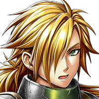

ＤＵＥＬ‐ＧＸ
エネルギージュウテン９９パーセント……。
ロディン
バカやろう……。 お前がとっとと逃げないから……。
ティアラ
せめてカニさんの気持ちは 大切にしたかったから……。
ゼルバーン
お前はもっと知る必要がある……。 お前を大切に思う者たちがいることをな…。
ロディン
ナメるなよ……。 お前に心配されるほどやわじゃない……。


ロディン
な、なんだ？
ゼルバーン
あの衝撃の中、カケラが残っているだけ でも奇跡なのだから。
ゼルバーン
その通りだ。 悔しいのはお前だけではない。
ゼルバーン
俺はあの時、動けなかった自分を悔やむ。 今まで積んできた修行はなんだったのかと！
ティアラ
ミセル……。 だから、そんなに自分を責めないで……。
ロディン
カニのことで、 自分を責めてたんじゃないのか？
ミセル
なんで、 私が自分のこと責めなきゃいけないのよ？
ミセル
私、これからあの穴に入って、 カニを連れ戻しに行ってくる！
ティアラ
あの穴は、 この世界とは違う世界に通じていて、
ティアラ
戻ってこれるかどうかも わからないのよ！
ティアラ
それに、カニさんが向こうに 本当にいるかどうかは……。
ミセル
みんな、これを見て。 カニが残してったカケラ。
ロディン
微かにだが…… 光が明滅を繰り返してる？
ミセル
きっとさっきの爆発で あっちの世界に飛ばされただけ。
ミセル
私の推測が合ってるかどうかは どうでもいいのよ。
ミセル
カニが生きている可能性があるのに 放っておくなんてできないわ！
ミセル
みんな、私を守るために ボロボロになっちゃったんだから。
ミセル
安心して。 ちゃんとカニを連れ戻してくる！
ミセル
それに、もし壊れてても 私が直してみせるわ！
ゼルバーン
あの穴に躊躇なく飛び込むとはな……。 アイツらしいと言えばアイツらしいか……。
ティアラ
……きっと最後じゃありません。 ミセルのことです。
ティアラ
カニさんを本当に連れ戻して また私たちの前に帰ってきますよ！
ゼルバーン
ああ、なんだかんだ言って、 口にしたことはすべて実行してきたヤツだ。
ゼルバーン
戻ってこれなくとも、 カニと出会うことぐらいはやるかもな……。
ロディン
チッ、そうだな……。 気に入らないがきっと今度も……。
その後、ミセルとＤＵＥＬ‐ＧＸがグランガイアに戻ってきたという記録は、残されていない。また、ティアラ、ロディン、ゼルバーンもこの時の傷のためかその後の活躍の記録は残されていない。
しかし、１つだけ彼女たちに関するその後の記録が残っている。後に奇妙な機械の欠片がミセルの実家に届いたという記録だけが。
人々はそれを元に様々な想像し後世に物語を伝えていった。
ミセルとＤＵＥＬ‐ＧＸが異界で再会し、その地の人々と暮らす人情劇を。破損したＤＵＥＬ‐ＧＸを直すためミセルがパーツを探し旅する冒険譚を。１人と１体が異界を恐怖に陥れた邪悪な竜を倒す英雄譚を。
彼女たちの物語はこれからも語り継がれるだろう。本当の最後が発見されたとしても……。